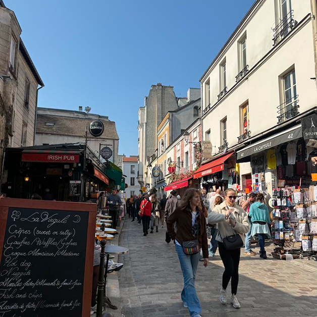
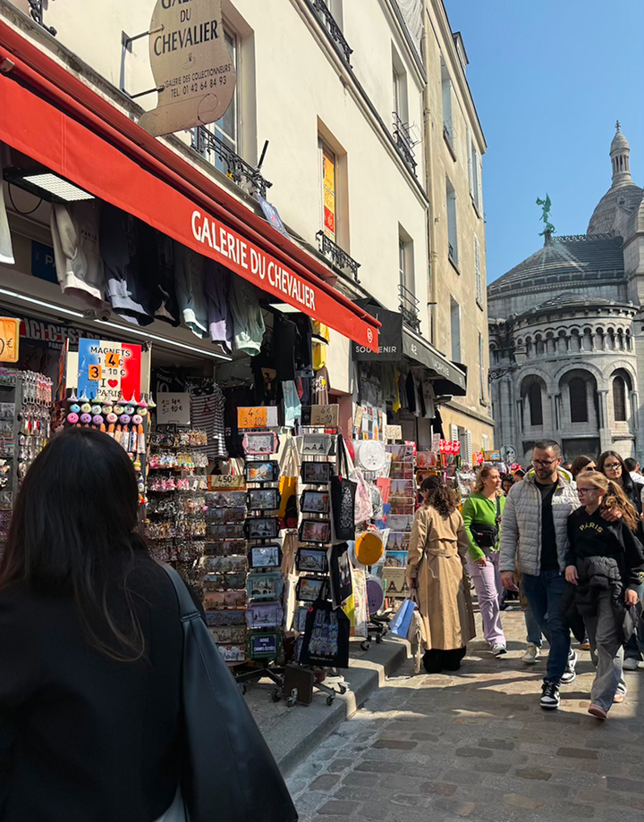
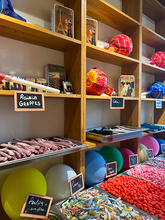
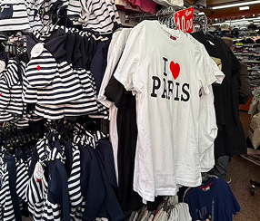
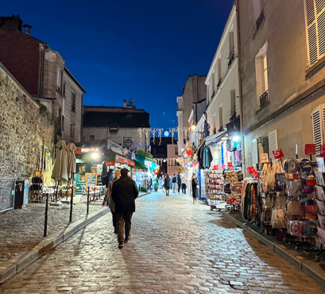

Open around 9:30am
Close around 9pm



If you find yourself wandering the 18th Arrondissement, you’ll likely end up at the Sacré-Cœur. Most people stick to the main stairs, but if you head just behind the Basilica, you’ll find Rue du Chevalier de la Barre. This is my go-to street every time I’m in Montmartre because it feels like a secret shortcut to the best souvenir shopping in the area. While the main square (Place du Tertre) can be a bit overwhelming and overpriced, this street offers a much more budget friendly spot for finding gifts for friends and family back home.
Staff friendliness:Even though it's a high-traffic area for tourists, the shopkeepers were super chill and didn't pressure us to buy anything immediately. Most of them spoke English well, which felt very welcoming.
Store Variety: You’ll see the classic 1€ keychains and colorful magnets, but you also find shops that specialize in religious icons, artistic postcards, and even locally made French soaps. There was also a candy shop we stumbled upon, and I’d highly recommend as they have unique candies that you can’t find back in the US. It’s a great street for one-stop shopping because the products range from standard souvenirs to items that actually feel unique to the history of Montmartre.
Store Size: Many of these shops are historic buildings, so they can feel a bit narrow and cramped when there’s a crowd. However, the owners are experts at using every inch of space since the shelves are packed from floor to ceiling with souvenirs. I’d recommend shopping during the evening as there are less tourists.
Prices: This street is surprisingly budget-friendly. You can find some of the best deals on bulk keychains and tote bags here compared to other souvenir spots in Paris. They do some discounts on bulk items but definitely for certain shops only.

3€ - 40€ per item
The iconic Montmartre aesthetic is worth the climb

